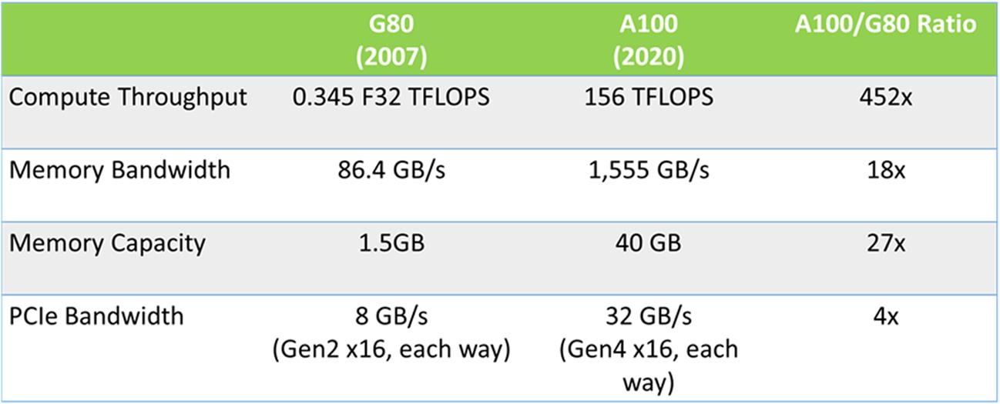

This chapter summarizes the main parts of the book. It then concludes the book by offering an outlook of how parallel programming is contributing and will continue to contribute to new innovations in science and technology.
Computational thinking; parallel patterns; golden age of computing; self-driving cars; individualized medicine
You made it! We have arrived at the finishing line. In this final chapter we will briefly review the learning goals that you have achieved through this book. Instead of drawing a conclusion, we will offer our vision for the future of massively parallel computing and how its advancements will affect the future course of science and technology.
As we stated in the Introduction, our primary goal is to teach you, the reader, how to program massively parallel processors. We promised that it would become easy once you develop the right intuition and go about it the right way. In particular, we promised to focus on computational thinking skills that would enable you to think about problems in ways that are amenable to parallel computing. We also promised to focus on the factors that limit the performance of parallel applications and provide a systematic approach for optimizing code to overcome these factors.
We delivered on these promises through four steps. In step one, Chapters 2 through 6 introduce the essential concepts of parallel computing and CUDA C and the key performance considerations in developing massively parallel code in CUDA. They also introduce the pertinent computer architecture concepts needed to understand the hardware limitations that must be addressed in high-performance parallel programming. With this knowledge, a developer can be confident in writing their parallel code and reasoning about the relative merit of alternative threading arrangements, loop structures, and coding styles. We conclude this part with a checklist of common optimization techniques that we apply throughout the rest of the book to optimize the performance of various parallel patterns and applications.
In the second step, we introduce six major parallel patterns (Chapters 7 through 12) that have been proven useful in introducing parallelism into many applications. These chapters cover the concepts behind the most useful patterns of parallel computation. Each pattern is illustrated with concrete code examples. Each pattern is also used to introduce important techniques for overcoming frequently encountered parallelization and performance obstacles in parallel programming. We also use these patterns to showcase how the optimizations introduced in the first step can be applied in a wide variety of scenarios.
In the third step, we introduce additional advanced patterns and applications (Chapters 13–19) to reinforce the knowledge and skills gained in the previous step. While in this step, we continue to apply the optimizations that we practiced in the previous step, we put more emphasis on exploring alternative forms of problem decomposition to enable parallelization and analyze the tradeoffs between different decompositions and their associated data structures. The final chapter in this step is dedicated to recap the computational thinking skills (Chapter 19, Parallel Programming and Computational Thinking) that help the reader to generalize the concepts learnt in the previous chapters into the high-level thinking required to tackle a new problem. With these insights, high-performance parallel programming becomes a thought process, rather than a black art.
The fourth step is to expose the reader to related advanced practices in parallel programming. Chapter 20, Programming a Heterogeneous Computing Cluster, presents the basic skills required to program an HPC cluster using MPI and CUDA C. Chapter 21, CUDA Dynamic Parallelism, presents an introduction to dynamic parallelism that helps parallel programmers to address more complex parallel algorithms with dynamically varying workload in many real-world applications. Chapter 22, Advanced Practices and Future Evolution, summarizes other advanced practices as well as expectations for the future evolution of massively parallel processors.
We hope that you have enjoyed the book and agree with us that you are now well equipped for programming massively parallel computing systems.
Since the introduction of the first CUDA-enabled GPU, the G80, in 2007, the capability of GPUs as massively computing devices has improved at an amazing 452× in computing throughput and 18× in memory bandwidth, as shown in Fig. 23.1. These advancements have stimulated tremendous progress in HPC, AI, and data analytics for both science and engineering, with significant impact on many vertical areas such as finance, manufacturing, and medicine. For example, as we have seen in Chapter 16, Deep Learning, GPUs have ignited a revolution in deep learning from very large datasets, with applications in image recognition, speech recognition, and video analytics.

Since the first edition of this book in 2010, the field of parallel computing has also advanced at an amazing pace. The spectrum of problems that can be solved with scalable algorithms has broadened significantly. While the use of GPUs was initially concentrated on regular, dense matrix computation and Monte Carlo methods, their use has quickly expanded into sparse methods, graph computation, and adaptive refinement methods. In many areas, there has also been fast advancement in algorithms. Some of the algorithms presented in the parallel pattern, advanced patterns, and applications chapters represent significant recent advancements.
It is only natural for some of us to wonder if we have reached the end of the fast advancement in parallel computing. From all indications, the answer is definitely no. We are only at the beginning of the parallel computing revolution. The amazing advancement in computing in the past three decades has triggered a paradigm shift in industry. The major innovations used to be driven by physical instruments assisted by computing devices. They are now driven by computing assisted by physical instruments.
For example, two decades ago, GPS revolutionized the way we drive. GPS is primarily based on satellite signal sensing assisted by computing methods that determine the shortest path between two locations. More recently, peer reporting and computing through the map apps in the phones and data services in the cloud have further enabled drivers to change their routes based on the traffic condition. Today, the most exciting revolution in the automobile industry is self-driving cars, which is primarily based on machine-learning computing methods assisted by physical sensors.
For another example, MRI and PET revolutionized medicine in the past two decades. These technologies are primarily based on electromagnetic and light sensors assisted by computational image reconstruction methods. They allowed doctors to see the pathology inside human bodies without surgery. Today, the field of medicine is going through the revolution of individualized medicine, which is primarily driven by computational genomics methods assisted by sequencing sensors.
For yet another example, the semiconductor industry used to rely on advancement in physical light sources assisted by computing methods that enforce design rules in their push to reduce the device feature size in the manufacturing process. Today, the advancement in physical light sources has practically stopped. The advancement in feature size reduction is primarily driven by lithography masks that are computationally designed to orchestrate the interference of light waves to result in extremely precise etching patterns on the chips.
The same kind of paradigm shift has been taking place in many other areas. Computing has become the primary driving force for virtually all exciting innovations in our society. This has created an insatiable demand for faster computing systems. As we discussed in Chapter 1, Introduction, parallel computing is the only viable approach to the growth of computing performance. This powerful demand will continue to motivate the industry to innovate and create more powerful parallel computing devices. One of the highest potential areas for improvement is the level of parallelism in accessing storage data, which has been done with a very low level of parallelism in the past. Radical improvements in accessing massive storage data will likely inspire a whole generation of applications that we currently cannot even imagine.
In conclusion, we are at the dawn of a golden age of computing. The industry will continue to recruit and reward highly skilled parallel programmers. Your work will make a real difference in the field of your choice.
Enjoy the ride!